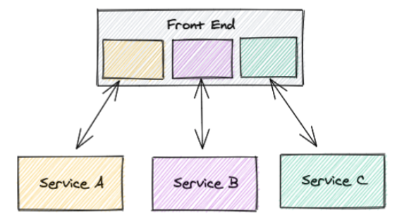

SPA & Component Architecture
- bewahren uns nicht vor einem Monolith (Modulith)
- mehrere Teams an einem Monolith führt zu Konflikten
- schlechte Skalierbarkeit, wenn das Projekt wächst
Micro Frontends
- aufteilen des Monolith in mehrere Frontends
- Frontends können zu einem Frontend zusammengesteckt werden

Micro Frontends
- reden meist auch mit eigenen Backends
- Micro Services
